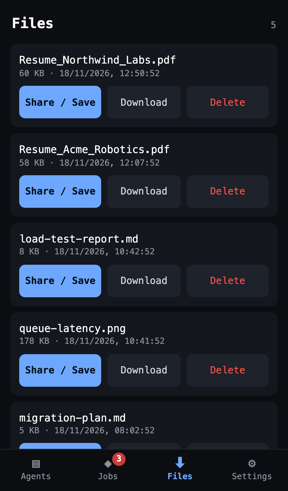
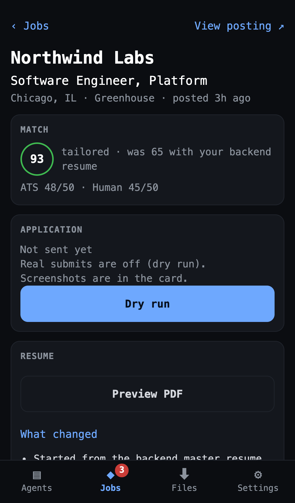

Coding agents on a server, steered from your phone.
agent-hub keeps Claude Code sessions running on an always-on Linux server. Open the phone app to see which ones need you, watch the live terminal and answer with a tap.

Answer from anywhere.
Claude Code hooks tell the hub when an agent is working, finished or waiting. Sessions that need you rise to the top.
When an agent asks a question or wants permission to run a command, its choices appear as buttons. One tap sends the answer, and the agent keeps going.

Work that keeps going.
Every agent runs inside tmux on the server, so closing the laptop doesn't stop anything. Reconnect from any device and the session is right where it was.
The phone streams the real terminal over a WebSocket, sized to fit the screen. Start, pin, rename or end sessions, and download any file an agent produces.

A job search that runs on its own.
The same server crawls company job boards, filters postings in code and scores each one with a small, fast model.
Strong matches get an unattended agent session that tailors a resume, has a second model rescore it and builds the PDF. A Playwright form filler then completes Greenhouse, Ashby, Lever and Workday applications, as a dry run by default.


How it's built
Self-hosted from end to end. The server listens only on localhost, and nothing is open to the public internet.
- Phone app
installable web appServed by the hub. No app store and no push service. - Tailscale
private networkCarries HTTPS to the hub and adds the user's identity to each request. - Hub
Fastify on 127.0.0.1Sessions API, terminal streaming, hook handlers and a file outbox. - Agents
tmux + Claude CodeOne session per agent, alive across disconnects and restarts.
TypeScript · Node.js · Fastify · WebSockets · node-pty · tmux · SQLite · Python · Playwright · Claude Code · Amazon Bedrock · Tailscale · systemd
Next: moving to AWS.
The hub and its browser-based form filler move to Amazon EC2 so more sessions can run side by side, and more model calls go through Amazon Bedrock under the daily spending cap already in the code.